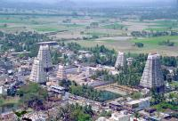
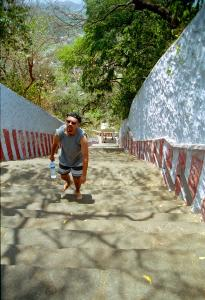
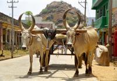

|
Mardi 27 mars
Petit bourg ou gros village, Tirukalikundram se trouve a une quinzaie de km
de Mahabalipuram. Il y a tres peu de touristes et 2 temples dont un identique
par la forme a celui de Madurai (4 grandes tours) et l'autre perche en haut
d'une colline. C'est super sympa de s'y plonger, de se retrouver dans la rue
en construction ou quelques 40 personnes travaillent. D'un cote la chaine pour
amener l'eau tiree au puits par une equipe, celle pour amener le sable, et celle
pour les gros cailloux, le tout transporte sur la tete et ramasse avec des sortes
de grandes pioches larges. De l'autre, la ronde incessante des porteurs de beton
qui l'amenent en equilibre sur leur tete a l'endroit voulu. Au milieu, la betonneuse.
Ambiance decontractee, equipe majoritairement feminine (les hommes chargent
les plateaux qu'elles portent, vident la betonniere et etalent sur la route)
et bonne humeur sous les 37 a 40 degres charges d'humidite. On est la, peinards
a les regarder bosser lorsqu'une nuee d'enfants debouche avec de grands cris
et supplie presque qu'on les prenne en photo!
Le temple du village est sympa a voir, il ya un sacre boulot de sculpture dedans.
Mais ca n'empeche que nombre de divinites font peur avec leurs allures guerrires
et leurs canines en avant... En plus, on y a rencontre des brahmanes (? en etaient-ce
???) qui font de droles de predictions! Nous etions avec un couple de bretons
et leur fils de 5 ans (cavalier de Lionel-Cheval par ailleurs) et le brahmane
me demande si c'est mon fils "no" "you, the same next year". Voila qui est dit,
j'aurai un fils l'an prochain. Rendez-vous en 2002 pour voir si les previsions
sont exactes... Je suis curieuse de voir ca! En tout cas, heureusement qu'il
n'a pas predit ca pour cette annee, c'est pas le moment. Sur ces bonnes paroles,
nous sommes partis voir le temple em haut de la colline. En bas, il faut se
dechausser, ca nous a inquietes car a force de marcher, on a les pieds en compote
et en plus, le sol est chaud. Il y a quelques 1000 marches en pierre!!! Un type
nous a assure que ce n'etait pas trop chaud, "no problem". A la montee, on a
enfile les 1000 marches en se cramant juste un peu la plante des pieds, (pourraient
quand meme faire pousser des arbres ou descendre le temple de sa colline!) en
courant un peu entre les rares zones pas trop chaudes, mais pas trop parce que
c'est abrupte et on y perd son souffle avec la temperature ambiante. Parce que
bien sur, comme d'hab', on a "choisi" de voir ce temple en pleinde chaleur sur
le coup de 11h, en pleine chaleur. En haut, superbe vue sur le village et la
campagne alentours, les champs, les rizieres, les troupeaux, les collines, les
points d'eau, les chars a boeufs, le temple du village... Et visite rafraichissante
du temple. Tant mieux car une fois en haut des escaliers, langue pendante, ne
revant que de cette bonne bouteille d'eau bien tiede qu'on s'est trimballe toute
la montee, en la reservant pour "apres l'effort", Lionel s'apercoit que cette
bonne eau minerale est... verte! On en a deje bu 1 litre, il n'y a plus qu'a
prier. Ca tombe bien, on va au temple. A la descente, c'est l'horreur. On n'a
p[as vraiment eu le loisir de regarder le paysage tant on etait concentre 1)
pour ne pas hurler tellement on s'est crame la plante des pieds, 2) pour ne
pas se casser la figure en foncant dans ses escaliers hyper abruptes! Il n'y
avait plus de zones tiedes de transit nulle part, et 1000 marches, c'est long.
Tout en versant l'eau verte sur ses pieds rougis, Lionel s'est promis d'attrapper
la peau de vache qui avait dit "no problem, it's not hot" et de lui appliquer
un fer a repasser sur les joues! Non mais!
Ce soir, diner "a la maison" avec Frida et Emilie. On s'est regale, meme pas
trop epice, sauf un peu le curry au poisson. On a papote assis par terre tout
en mangeant notre riz et nos epinards avec nos doigts. Un regal. Ensuite, Frida
et moi avons joue au "chinese chess" et Emilie a abandonne la tele pour m'aider.
Elle triche a fond, c'etait rigolo. En fait, elle a pris la partie em main et
je suis devenue spectatrice. C'etait trop rigolo de voir Emilie tricher a chaque
coup et Frida la gronder systematiquement! On a quand meme perdu! De toutes
facon, Frida est trop forte a ce jeu. En plus, elle me deconcentre en petant
sonore pour rythmer la partie! Bref une excellente journee. Nous avons rendu
leur cham,bre a Emilie et Frida pour recuprer une des 2 dediees a la location.
Mercredi 28 mars
Aujourd'hui, on fait les bons touristes: visite de la "crocodle farm". Les
crocos, c'est imprsssionnant quand on les voit comme ca, ca devient nettement
plus sympa quand on les imagine avec une poignee dans le dos... (humour! n'alertons
pas Brigitte Bardot pour ca). Parc tres agreable, ombrage, avec plein de grosses
bebetes avec de grandes dents. Nouvelle ballade au coeur du village de tailleurs
de pierres. C'est incroyable ce qu'ils font avec les blocs de granit, des petites
figurines aux enormes statues ornant les temples hindous. Toute la journee,
on entend le bruit du marteau sur le burin et comme il ne fait "que" 38 degres,
ils allument des feux pour se rechauffer. Pour aiguiser leurs pics de taille
en fait. Ce soir je me suis encore fait exploser par Frida au chinese chess,
elle est vraiment trop forte. Au diner, elle a prepare du poisson aux epices
delicieux qu'on a deguste sur une feuille de bananier avec riz, patates... Comme
ca, pas de vaisselle! Vivement que mon bananier pousse... ou que j'ai une machine
a laver!
Suite du voyage : Le train pour Puri
|

Inde
Tirukalikundram
|

Inde
Tirukalikundram
|

Inde
Tirukalikundram
|

Inde
Tirukalikundram
|
|
|